Documentacion¶
Teoria de sistemas 1 PS2026¶
201931295 - Elmer Wilson Miguel Juan¶
SECCIÓN 1 — GESTIÓN DE PROYECTO¶
1. ENUNCIADO DE ALCANCE DEL PROYECTO: SYSHUB¶
1.1. DESCRIPCIÓN GENERAL DEL PROYECTO¶
El presente documento establece las bases fundamentales, fronteras operativas y requerimientos técnicos para el diseño y construcción de Syshub. En términos sistémicos, Syshub se concibe como un ecosistema digital de aprendizaje continuo, orientado a la comunidad estudiantil y docente de la carrera de Ingeniería en Ciencias y Sistemas.
La naturaleza del sistema radica en operar como una plataforma web integral enfocada estrictamente en la gestión, preservación y distribución del conocimiento académico. El problema central que resuelve es la pérdida sistemática de información y experiencia académica debida a la transición semestral; un fenómeno en el cual los hallazgos valiosos, las resoluciones estructurales de proyectos y el aprendizaje práctico de los estudiantes desaparecen una vez concluye un ciclo académico. Syshub propone transformar este "montón" de archivos desconectados en un sistema donde el conocimiento colectivo surge como una propiedad emergente de la interacción humana.
El público objetivo primario de esta solución tecnológica incluye a los estudiantes activos —que actúan como productores y consumidores simultáneos de conocimiento—, así como a los auxiliares de cátedra y docentes, quienes operan como curadores y validadores de la calidad de dicho contenido.
1. 2. DEFINICIÓN DE ALCANCE (IN SCOPE)¶
El sistema Syshub abarcará exclusivamente la fase operativa detallada a continuación, estructurándose mediante un enfoque modular que garantiza la cohesión y alta disponibilidad del ecosistema formativo. El alcance funcional se delimita a cuatro módulos cardinales entrelazados:
A) Gestión de Identidad y Perfiles: El sistema proveerá la infraestructura necesaria para la autenticación y autorización segura. Contempla el registro de usuarios, inicio de sesión seguro, encriptación de credenciales y flujos de recuperación de contraseñas. Cada individuo contará con un perfil académico persistente capaz de rastrear su actividad dentro del ciclo de vida del ecosistema, consolidando su propio material guardado, publicaciones propias e interacciones en foros.
B) Repositorio de Proyectos y Tareas: Constituye el núcleo de almacenamiento estructurado del sistema. Permitirá a los estudiantes realizar la carga categorizada de proyectos técnicos y académicos. Cada carga incluirá metadatos técnicos extensivos, como la descripción del planteamiento, el conjunto de tecnologías utilizado (stack tecnológico), archivos adjuntos validables y etiquetas paramétricas de búsqueda. Además, habilitará la "curaduría por auxiliares", un mecanismo para identificar y destacar el material sobresaliente, asegurando su disponibilidad para las futuras cohortes.
C) Sección Social y Foros (Sys-Reddit): Para asegurar la emergencia del conocimiento colectivo, se implementará un componente altamente interactivo basado en foros de discusión anidados, similar en arquitectura a Reddit. Habilitará la creación de hilos, un sistema de blogs para publicaciones de formato largo elaboradas por autores verificados, así como un robusto motor de interacciones con comentarios moderables y un sistema de valoraciones (upvotes/downvotes) enfocado en dar prominencia orgánica al mejor contenido técnico.
D) Panel de Administración y Moderación: Corresponde a la capa de gobernanza del ecosistema. Permitirá controles de Alto Nivel para la administración de usuarios, asignación y revocación de roles (Estudiante, Auxiliar, Administrador, Moderador) e instrumentará un esquema de clasificación jerárquica guiado por el pensum de estudios y áreas transversales de ingeniería. Proveerá integraciones para revisar casos de abuso, contenido reportado y aplicar sanciones.
1.3. FUERA DEL ALCANCE (OUT OF SCOPE)¶
Para garantizar la viabilidad técnica y adherencia al ciclo temporal de vida del proyecto establecido para la Fase 1, se declaran explícitamente fuera de los límites del sistema los siguientes elementos:
- No incluye el desarrollo de aplicaciones móviles nativas (Android / iOS). La entrega se restringirá estrictamente a una plataforma web responsiva.
- No incluye sistemas de videoconferencia o streaming en tiempo real integrados dentro de la plataforma.
- No incluye integraciones directas con sistemas externos institucionales, tales como portales de control académico o repositorios de asignación de notas oficiales de la facultad.
- No se implementará ninguna pasarela de pagos, monetización, ni cobros por acceso a la documentación académica o foros.
- No incluye chat en vivo ni un sistema de mensajería privada directa (Direct Messages) entre usuarios, con el fin de enfocar la comunicación al debate público en foros.
- No aplica algoritmos de Inteligencia Artificial para la recomendación de proyectos, ni matching de contenidos predictivos automatizados (esto se reserva para iteraciones futuras).
1.4. REQUISITOS FUNCIONALES Y 5. CRITERIOS DE ACEPTACIÓN¶
A continuación, se formalizan las especificaciones del sistema utilizando un diseño de matriz que interconecta los Requisitos Funcionales y sus correspondientes Criterios de Aceptación por módulo.
MÓDULO A: Gestión de Identidad y Perfiles¶
| ID | Descripción Funcional | Actor | Prioridad | Criterios de Aceptación (DADO / CUANDO / ENTONCES) |
|---|---|---|---|---|
| RF-A-001 | El sistema debe permitir el registro de nuevos usuarios verificando unicidad de correo institucional. | Estudiante | Alta | DADO un usuario anónimo en la página de registro CUANDO ingresa un correo ya existente ENTONCES el sistema muestra un mensaje de "Correo ya registrado" y bloquea el envío. DADO datos válidos y correo único CUANDO envía el formulario ENTONCES se crea la cuenta en estado inactivo hasta validación. |
| RF-A-002 | El sistema debe posibilitar el inicio libre de sesión con credenciales válidas generadas. | Estudiante, Auxiliar | Alta | DADO un usuario con cuenta activa CUANDO ingresa credenciales correctas ENTONCES se genera un token de sesión y se redirige al dashboard. DADO un usuario en el login CUANDO ingresa una contraseña incorrecta 3 veces ENTONCES se bloquea temporalmente el inicio de sesión. |
| RF-A-003 | El sistema debe facilitar el flujo seguro de recuperación de contraseña olvidada. | Estudiante | Media | DADO un usuario que olvidó su acceso CUANDO solicita restablecimiento por correo ENTONCES el sistema envía un enlace de un solo uso con expiración. DADO que hizo clic en el enlace válido CUANDO asigna nueva contraseña ENTONCES la clave se actualiza y redirige al inicio. |
| RF-A-004 | El sistema debe mostrar un perfil personal estructurado con el historial de actividad propio del usuario. | Estudiante | Media | DADO un usuario logueado adecuadamente CUANDO accede a la sección "Mi Perfil" ENTONCES se visualiza su información básica (carnet, semestre). DADO el acceso a la vista de perfil CUANDO navega por la ventana ENTONCES observa la lista de hilos creados y proyectos subidos. |
| RF-A-005 | El sistema debe permitir guardar en "favoritos" contenido externo y catalogarlo. | Estudiante | Baja | DADO un usuario viendo un proyecto de otro estudiante CUANDO hace clic en "Guardar Material" ENTONCES el registro se asocia a su perfil personal. DADO que visita la zona "Mi Material" CUANDO selecciona revisar sus marcadores ENTONCES se listan todos los materiales que marcó. |
MÓDULO B: Repositorio de Proyectos y Tareas¶
| ID | Descripción Funcional | Actor | Prioridad | Criterios de Aceptación (DADO / CUANDO / ENTONCES) |
|---|---|---|---|---|
| RF-B-001 | El sistema debe habilitar un formulario estructurado para la publicación de proyectos técnicos. | Estudiante | Alta | DADO un estudiante en la pantalla de carga CUANDO llena título, descripción técnica y stack tecnológico ENTONCES se procesa la información en base a metadatos. DADO el mismo estudiante CUANDO deja la descripción vacía y pulsa enviar ENTONCES surge una alerta indicando que es campo obligatorio. |
| RF-B-002 | El sistema debe permitir el anexo de archivos cumpliendo restricciones de formato y peso. | Estudiante | Alta | DADO el módulo de adjuntos en un proyecto CUANDO el usuario sube un archivo > 50MB ENTONCES se rechaza la carga informando límite de tamaño. DADO el módulo de adjuntos CUANDO anexa archivos formatos .ZIP o .PDF permitidos ENTONCES los asocia a la base de datos del proyecto. |
| RF-B-003 | El sistema debe admitir indexación del conocimiento usando etiquetas o "tags" temáticos. | Estudiante | Media | DADO el proceso de creación de proyecto CUANDO digita palabras clave como "Java" o "Grafos" ENTONCES las etiquetas se guardan relacionadas al proyecto. DADO un usuario en el explorador global CUANDO filtra mediante la etiqueta "Grafos" ENTONCES ve todos los proyectos con ese tag específico. |
| RF-B-004 | El sistema debe proporcionar la interfaz de curaduría para marcar material destacado semestral. | Auxiliar | Alta | DADO un auxiliar visualizando el proyecto de un alumno CUANDO presiona el control de "Destacar Semestre" ENTONCES el proyecto obtiene la bandera de Curaduría Destacada. DADO que destacó el proyecto CUANDO se lista en búsquedas posteriores ENTONCES aparece visualmente priorizado para todos. |
| RF-B-005 | El sistema debe registrar métricas de visibilidad simples por cada material subido. | Sistema | Baja | DADO un proyecto público abierto en pantalla CUANDO es visitado por un usuario logueado único ENTONCES el contador de visualizaciones incrementa en 1. DADO el autor observando su propio repositorio CUANDO revisa las tarjetas publicadas ENTONCES puede evaluar cuántas vistas ha recibido el recurso. |
MÓDULO C: Sección Social y Foros (Sys-Reddit)¶
| ID | Descripción Funcional | Actor | Prioridad | Criterios de Aceptación (DADO / CUANDO / ENTONCES) |
|---|---|---|---|---|
| RF-C-001 | El sistema debe habilitar el inicio de hilos de discusión categorizados técnicamente. | Estudiante | Alta | DADO un estudiante que desea solventar una duda CUANDO selecciona "Crear Hilo" y elige la categoría "Bases de Datos" ENTONCES el hilo se crea clasificado correctamente. DADO el hilo recién configurado CUANDO se navega a la categoría "Bases de Datos" ENTONCES aparece disponible en la lista de debates recientes. |
| RF-C-002 | El sistema debe facilitar respuestas anidadas sobre hilos existentes y blogs. | Estudiante, Auxiliar | Alta | DADO un hilo o publicación expuesta CUANDO un usuario presiona "Responder" y escribe contenido ENTONCES el comentario se adjunta secuencialmente al hilo. DADO un comentario ya trazado CUANDO alguien responde a ese preciso comentario ENTONCES la respuesta se anida visualmente con sangría. |
| RF-C-003 | El sistema debe calcular y mostrar el prestigio organizando contenido por valoraciones orgánicas. | Estudiante | Alta | DADO un comentario útil CUANDO cinco estudiantes otorgan un "Upvote" ENTONCES la calificación global del comentario es +5. DADO un listado masivo de comentarios en un foro CUANDO es cargado en la web ENTONCES se ordenan descendentemente según su puntuación. |
| RF-C-004 | El sistema debe posibilitar un entorno para artículos y guías profundas tipo "Blog". | Auxiliar | Media | DADO un usuario con permisos de escritura avanzada CUANDO despliega la redacción de artículo en formato rico ENTONCES puede incorporar jerarquía, código e imágenes. DADO el artículo expuesto CUANDO se publica ENTONCES aparece en una sección separada del foro normal. |
| RF-C-005 | El sistema debe proveer una vía para reportar contenido no apropiado. | Estudiante | Baja | DADO un comportamiento hostil en un foro CUANDO un usuario selecciona "Reportar Infracción" ENTONCES el contenido exige una razón predefinida. DADO un reporte enviado con justificación CUANDO se consolida en la base ENTONCES levanta una bandera en el panel de revisión del moderador. |
MÓDULO D: Panel de Administración y Moderación¶
| ID | Descripción Funcional | Actor | Prioridad | Criterios de Aceptación (DADO / CUANDO / ENTONCES) |
|---|---|---|---|---|
| RF-D-001 | El sistema debe facilitar la visualización, alteración y supresión de cuentas (CRUD). | Administrador | Alta | DADO un administrador operando el panel CUANDO busca por carnet a un individuo ENTONCES localiza todos los metadatos ligados al sujeto. DADO el perfil del individuo identificado CUANDO remueve un rol o cuenta ENTONCES la cuenta pierde totalmente acceso al instante. |
| RF-D-002 | El sistema debe instrumentar la gestión global de roles y acreditaciones jerárquicas. | Administrador | Alta | DADO la cuenta básica de un estudiante logueada CUANDO el gerente le asigna el rol de "Auxiliar" ENTONCES el sistema le otorga acceso a curaduría de proyectos. DADO un auxiliar con período culminado CUANDO el administrador quita el rol ENTONCES revierte sus habilidades a nivel básico. |
| RF-D-003 | El sistema debe gobernar la parametrización de pensum y asignaturas en tablas maestras. | Administrador | Media | DADO un cambio reciente implementado en la facultad CUANDO el administrador inserta el nuevo curso "Inteligencia Artificial 2" ENTONCES el curso aparece para todos al momento de etiquetar. DADO un curso obsoleto CUANDO se procede a su archivado sistémico ENTONCES ya no se admite subida de material nuevo bajo el mismo. |
| RF-D-004 | El sistema debe contar con una bandeja procesadora de reclamos sociales (Moderación). | Moderador | Alta | DADO el acceso al panel central por un Moderador CUANDO verifica la cola de moderación pendiente ENTONCES ve la acumulación cronológica de conflictos reportados. DADO un hilo denunciado múltiples veces CUANDO el Moderador presiona "Eliminar contenido" ENTONCES desaparece definitivamente de la vista pública. |
| RF-D-005 | El sistema debe autorizar bloqueos y suspensiones por vulnerar regulaciones. | Moderador, Admin | Media | DADO un estudiante que trasgredió los términos severamente CUANDO el moderador dicta un "Baneo de cuenta" ENTONCES se revoca inmediatamente cualquier token activo del usuario. DADO el mismo usuario baneado CUANDO intenta entrar nuevamente con sus credenciales intactas ENTONCES el sistema alerta "Acceso denegado: contacto con el soporte". |
2 ESTRUCTURA DE DESGLOSE DE TRABAJO (EDT)¶
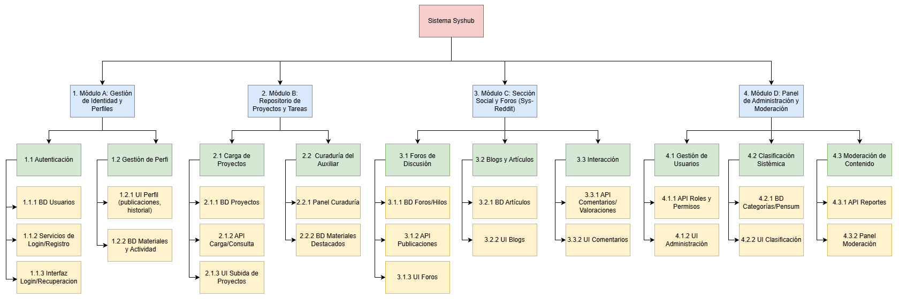
3. CRONOGRAMA DE ACTIVIDADES (DIAGRAMA DE GANTT)¶
Cronograma:
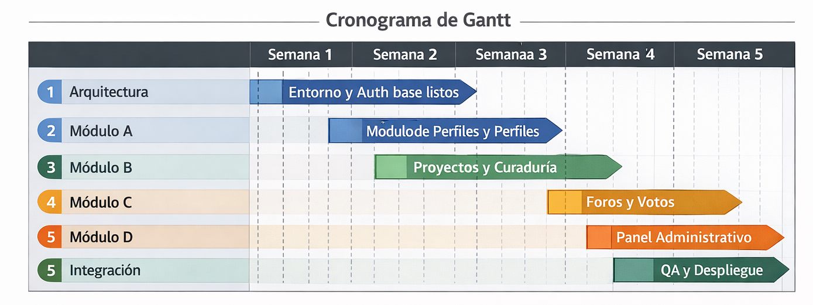
3.1 Tabla de Hitos de Control¶
| # | Hito | Semana | Entregable verificable |
|---|---|---|---|
| 1 | Entorno y Auth base listos | Semana 1 | Repositorio configurado, BD en la nube conectada y API funcional retornando token de registro/login exitoso. |
| 2 | Módulo de Perfiles y Repositorio base | Semana 2 | Estudiante puede loguearse y subir un proyecto técnico (PDF/ZIP) funcional al sistema. |
| 3 | Ecosistema principal operativo | Semana 3 | La curaduría funcional y creación exitosa de un primer hilo en foros con respuestas anidadas. |
| 4 | Plataforma social y Admin finalizado | Semana 4 | Panel de moderación bloquea / activa roles; el sistema de upvotes funciona en tiempo real. |
| 5 | Sistema integrado y Desplegado | Semana 5 | El proyecto está montado en un servidor público (URL activa) pasando las pruebas críticas libres de bugs graves (P0). |
3.2 Tabla de Tiempo Estimado por Módulo¶
| Módulo | Actividad (Backend + Frontend en paralelo) | Semanas | Horas estimadas |
|---|---|---|---|
| Arquitectura | Definición técnica, creación del repo y CI/CD | 0.5 semanas | 20 horas |
| Módulo A | Autenticación, Gestión de Perfiles y Sesiones | 1.5 semanas | 45 horas |
| Módulo B | Repositorio de Proyectos y vistas de Curaduría | 1.5 semanas | 50 horas |
| Módulo C | Foros de discusión (Sys-Reddit), Posts y Votos | 2 semanas | 60 horas |
| Módulo D | Panel de Gobernanza Administrativa y Moderador | 1 semana | 35 horas |
| Integración | QA testing integral, mitigación de errores y Deploy | 1 semana | 40 horas |
| TOTAL | Desarrollo completo acelerado | 5 Semanas | 250 horas |
SECCIÓN 2 — MODELADO SISTÉMICO Y TÉCNICO¶
4. ANÁLISIS DSRP DEL SISTEMA SYSHUB¶
4.1. INTRODUCCIÓN¶
El framework DSRP (Distinctions, Systems, Relationships, Perspectives), desarrollado por los científicos Cabrera y Cabrera (2006), es un modelo avanzado de pensamiento sistémico diseñado para comprender la complejidad mediante la deconstrucción estructural de un fenómeno. Al aplicar el DSRP al proyecto "Syshub", el objetivo no es meramente enumerar los componentes de software, sino decodificar los patrones subyacentes que permiten a una simple plataforma web evolucionar hasta convertirse en un ecosistema de aprendizaje continuo. Este marco analítico permite estructurar mentalmente Syshub, definiendo sus límites axiomáticos, evaluando cómo sus partes individuales generan un todo emergente, mapeando las sinergias entre los usuarios y el contenido, y reconociendo cómo la percepción del entorno cambia drásticamente según quién interactúe con él.
4.2. D — DISTINCIONES (QUÉ ES Y QUÉ NO ES)¶
La dimensión de las distinciones define las fronteras ontológicas de Syshub; es decir, traza una línea clara entre lo que el sistema debe hacer y aquello de lo que debe abstenerse para mantener su propósito original inalterado. En primer lugar, establecemos que Syshub ES un ecosistema digital enfocado puramente en el conocimiento colectivo. A nivel operativo, actúa como un repositorio académico vivo que evoluciona con cada ciclo semestral. No es un cementerio de código obsoleto u olvidado, sino una red social técnica altamente especializada. La plataforma es un moderador orgánico de la experiencia estudiantil en la Facultad de Ingeniería en Ciencias y Sistemas: un hub donde el prestigio se gana por la calidad de las soluciones aportadas.
Por contraste, es crucial delimitar lo que Syshub NO ES, previniendo que el "scope creep" (corrupción del alcance), debilite su arquitectura. Syshub no es un Sistema de Gestión de Aprendizaje (LMS) institucional como Canvas, Moodle o UEDi, por ende, carece de mecanismos formales para entregar notas, tomar asistencias o publicar ponderaciones oficiales de los catedráticos. Tampoco cumple las funciones cognitivas de una red social de carácter general (como Facebook o Instagram); sus foros están restringidos a la esfera académico-profesional. Finalmente, está distanciado de las plataformas de comunicación síncrona; en consecuencia, no integra esquemas para videoconferencias o mensajería en tiempo real tipo chat directo. Se mantiene focalizado estrictamente en la acumulación y categorización asíncrona pero altamente estructurada de saberes.
4.3. S — SISTEMAS (PARTES Y EL TODO)¶
En el modelo DSRP, un "sistema" se comprende determinando que cualquier entidad grande es la sumatoria interdependiente de sistemas menores subordinados (partes) que exhiben funciones limitadas por separado, pero un nivel de complejidad superior al reunirse. En el caso de Syshub, su anatomía está segmentada estructuralmente en cuatro subsistemas técnicos que se correlacionan. Se identifica un Subsistema de Identidad, responsable de la individualización y seguridad criptográfica de las credenciales; un Subsistema de Conocimiento, el núcleo duro de almacenamiento, que acopia proyectos y maneja el versionado documental de curaduría; un Subsistema Social, que alberga los foros, la calificación comunitaria y blogs; y un Subsistema de Gobernanza, la capa administrativa que dicta normas, jerarquiza roles y censura el ruido entrópico.
Si analizamos estos cuatro módulos de forma aislada, encontramos sistemas puramente mecánicos: un registro CRUD, una base de almacenamiento de datos o un renderizador de listas. Sin embargo, cuando se operan en conjunto provocan un fenómeno conocido en teoría de sistemas como una propiedad emergente. En Syshub, esa propiedad es la preservación transgeneracional del conocimiento colectivo: un resultado sistémico que los módulos no pueden fabricar de modo individual. Gracias a la existencia combinada de perfiles, un foro donde consultarlo y curadores que destaquen lo adecuado, la base de datos trasciende y se percibe una inteligencia colectiva que neutraliza la amnesia semestral en la facultad cada vez que cambia un ciclo lectivo.
4.4. R — RELACIONES (INTERACCIONES)¶
Las relaciones dentro de Syshub componen la fuerza metabólica y dinámica del entorno, enlazando entidades que no poseen un significado contundente fuera de esta interdependencia. Un repositorio por sí mismo carece de vitalidad sin una interacción; por tanto, el eje es la de Usuario-Contenido. El estudiante que actúa de nodo productor (subir un proyecto o abrir un hilo en los foros) retroalimenta el sistema, al ser calificado, comentado o cuestionado por otro nodo receptor, lo que instiga un ciclo constante de generación intelectual mediada.
Se desprenden igualmente las relaciones asimétricas, como aquellas del Auxiliar-Proyecto y del Administrador-Sistema. El Auxiliar establece la relación de Curaduría: no se adueña de la producción ajena, sino que aplica una interacción de filtrado evaluativo (destacando material semestral valioso) para maximizar la calidad orientada en los foros. De manera análoga, la relación Admin-Sistema es rectora; el administrador clasifica e impone moderaciones para que las estructuras permanezcan alineadas al pensum real vigente. Asimismo, no debe ignorarse la interacción de nivel superior generada por una entidad inmaterial o no humana llamada Contenido-Visibilidad: un patrón de realimentación positiva algorítmica donde un proyecto altamente valorado ("Upvoting" de foros), recibe mayor atracción automática desde el propio sistema, posicionándose espontáneamente hacia la primera página sin intervención administrativa adicional.
4.5. P — PERSPECTIVAS¶
Cualquier sistema complejo se comporta y tiene lecturas distintas en función del punto de observación o el contexto local del sujeto que examina la estructura, una noción intrínseca a la dimensión "Perspectivas". Para un Estudiante, la plataforma adquiere el cariz de un centro colaborativo e inmediato. El usuario ordinario experimenta Syshub adoptando el rol de "Prosumidor" (productor + consumidor simultáneo). Visualiza una herramienta indispensable para resolver barreras técnicas urgentes del día a día (dudas recurrentes en compiladores, lenguajes, etc.) y como un portafolio primitivo para atesorar y mostrar a sus pares la gloria particular de un compilador entregado en óptimas condiciones.
Por su parte, la perspectiva del Auxiliar de Cátedra es diametralmente analítica e historicista. Ven el sistema como un mecanismo curatorial o como un registro documental semestral formal; un medio por el que las resoluciones robustas e inteligentes de los laboratorios no terminan perdiéndose ni borradas a los cuatro meses. La perspectiva del Administrador, bajo su perfil panóptico general, decodifica y evalúa la salud holística y legal del ecosistema (estabilidad estadística, categorías desfasadas). Y finalmente, en un plano altamente filosófico, la perspectiva del Sistema en Sí Mismo visualiza su propia arquitectura no como una plataforma rígida de registros con un servidor cloud, sino como un organismo de red emergente de conocimiento vivo, diseñado para auto-preservarse, mutar e incrementarse en inteligencia distribuida.
4.6. TABLA RESUMEN DSRP¶
| Dimensión | Elemento Analizado | Descripción Sistémica | Impacto en el Sistema Syshub |
|---|---|---|---|
| Distinciones | Repositorio VS LMS | Syshub aloja proyectos técnicos colectivos asíncronos; de ningún modo estructura notas, asistencia o rubricas formales académicas. | Previene la burocratización de la plataforma y sobrecarga de uso por responsabilidades administrativas del profesorado. |
| Distinciones | Red Social Especializada | Limita la comunicación a hilos y publicación académica, prohibiendo mensajes directos privados (DMs) de socialización. | Concentra la base de datos en información de alto grado de consulta útil para toda la comunidad simultáneamente. |
| Distinciones | Esfera de Conocimiento | Determina formalmente al sistema como un hábitat para la salvaguarda y retransmisión de saberes, opuesto a una red general. | Fija los requerimientos de diseño a la priorización de código y teoría aplicativa como metadato primario del software. |
| Distinciones | Inclusión y Exclusión | Declara funcionalidades estrictamente Web, sin algoritmos automáticos IA de recomendación predictiva. | Garantiza la entrega técnica con viabilidad dentro de la restricción presupuestaria temporal de la actual "Fase 1". |
| Sistemas | Módulo de Identidad | Subsistema estructurado por reglas criptográficas (Roles, Perfiles, Login JWT). | Proporciona individualidad a cada acción en el Ecosistema para que asimile reputación persistente. |
| Sistemas | Módulo de Repositorio | Centro persistente de acopio y descargas de código, recursos en JSON y etiquetado (TAGS). | Actúa como nodo de información inerte en espera de reanimación y conexión con futuras dudas. |
| Sistemas | Módulo Social Foros | Intersecciones algorítmicas (Sys-Reddit) entre perfiles y conocimiento para entablar debatas escalares. | Estimula al software inerte de proyectos logrando que se transforme hacia el aprendizaje continuo mutante. |
| Sistemas | Propiedad Emergente | El conocimiento técnico imperecedero, consolidado como un activo derivado espontáneo inter-módulo. | Causa la propia razón de existir de los modelos estructurales reduciendo sistemáticamente la amnesia en facultades. |
| Relaciones | Hilo y Respuesta | Enlace recíproco y temporal dependiente en los Foros donde una Consulta incita una réplica. | Dinamiza orgánicamente toda la base de datos atrayendo un tráfico constante participativo. |
| Relaciones | Curador y Laboratorio | Relación jerárquica semi-automática en virtud de la cual un auxiliar promueve contenidos al rango superior destacado. | Impide la saturación de data inservible orientando algoritmos para visibilizar lo genuinamente sobresaliente. |
| Relaciones | Administrador y Estructura | Flujos bidireccionales en los cuales se controlan penalizaciones y reestructuraciones de áreas en el árbol. | Consigue prevenir estancamientos del proyecto frente a reformas programáticas del nivel administrativo universitario. |
| Relaciones | Valoración Reputacional | Algoritmo derivado del feedback "Upvote/Downvote" provocando que una publicación obtenga visualizaciones multiplicativas. | Fomenta gamificación en donde la exactitud del conocimiento aportado dictamina directamente un estatus privilegiado social. |
| Perspectivas | Visión del Estudiante | Uso pragmático: resolver dudas, hallar ayuda en laboratorios y exhibición de aportaciones al portafolio. | Alimenta operativamente e impulsa permanentemente al sistema y lo masifica como sus generadores originarios. |
| Perspectivas | Visión del Auxiliar | Uso documentalista: registro empírico y plataforma de re-difusión eficiente o preservación material del talento docente | Sirve de herramienta catalizadora con respecto a los contenidos sobresalientes o a proyectos impecables. |
| Perspectivas | Visión del Moderador | Uso correctivo: radar permanente de anomalías, spam o contenido de carácter impropio en los servidores. | Mantiene purificado, operativo y estático el orden institucional permitiendo que el sistema conserve reputación impecable. |
| Perspectivas | Visión Orgánica Global | Redes autosanadoras donde un flujo sinérgico masivo se integra previniendo a la desaparición semestral sistemática. | Comprende al ecosistema global holístico capaz de producir memoria institucional continua emergente. |
5. MAPA DE PROCESOS¶
5.1. Flujo de Registro e Inicio de Sesión de Usuario¶
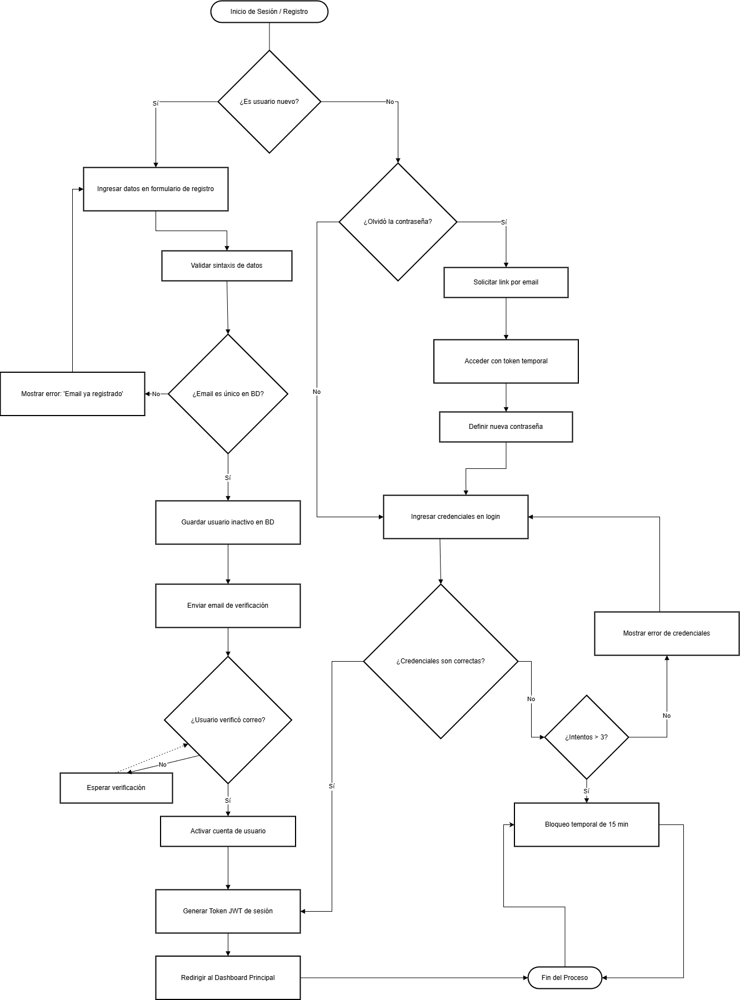
5.2. Flujo de Publicación de un Repositorio de Proyecto¶
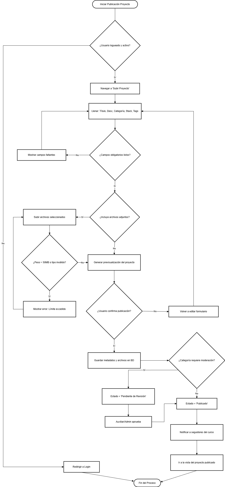
5.3. Flujo de Participación en Foro (Sys-Reddit)¶
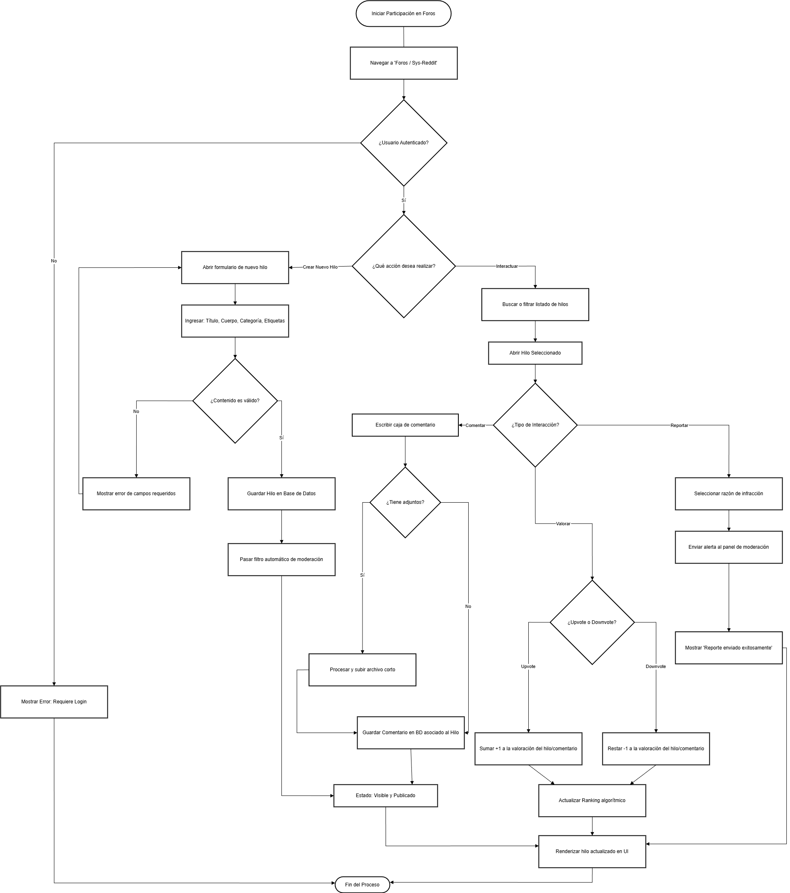
6. DIAGRAMA ENTIDAD-RELACIÓN / LÓGICO (DER)¶
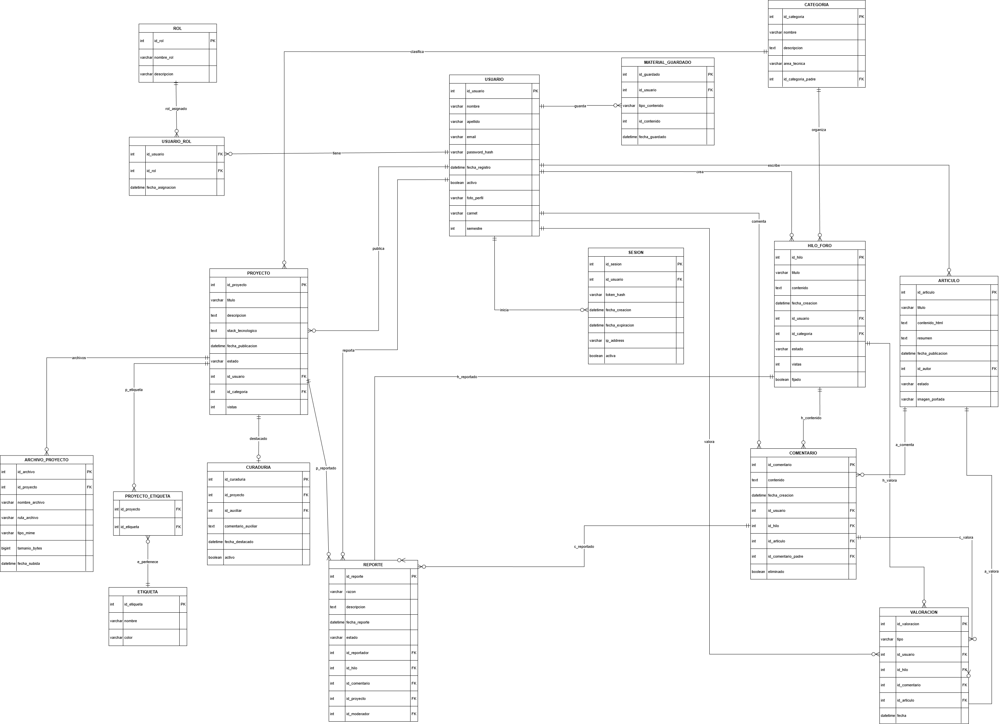
7. MOCKUPS¶
7.1. Dashboard¶
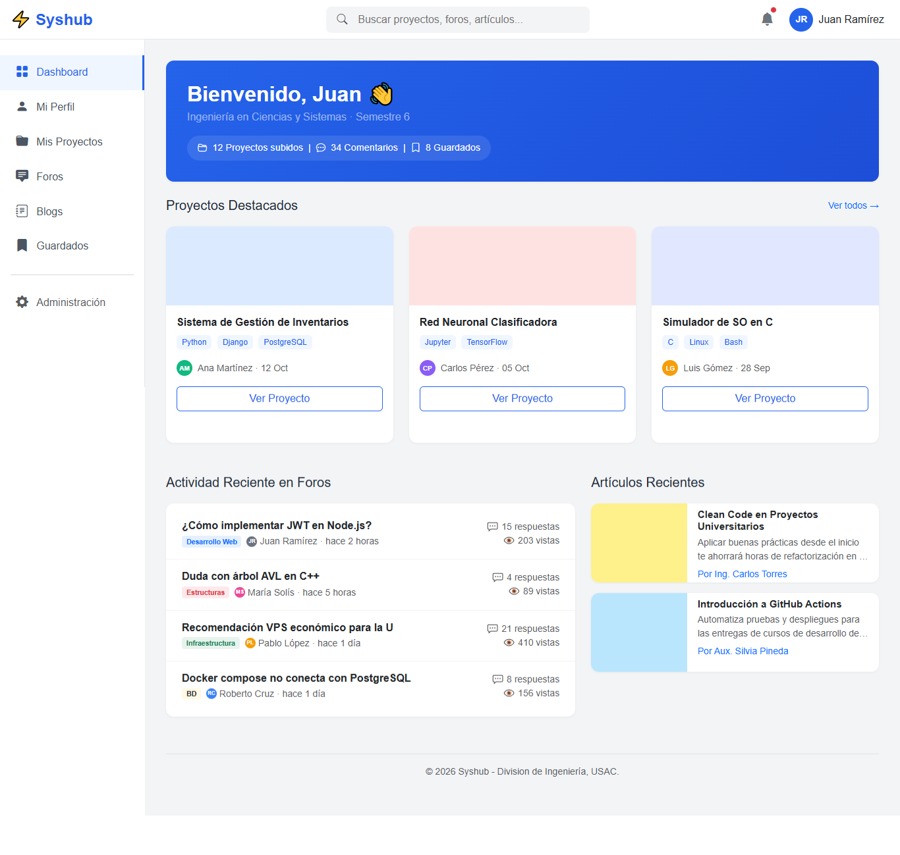
7.2. Foros¶
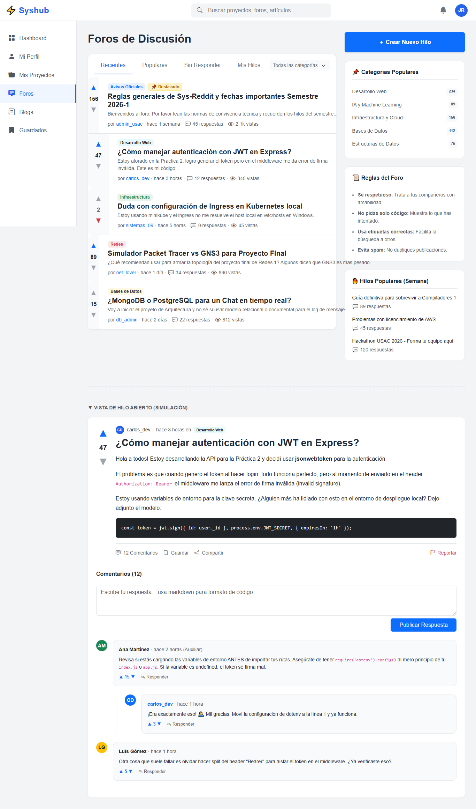
7.3. Repositorio (Mis Proyectos)¶
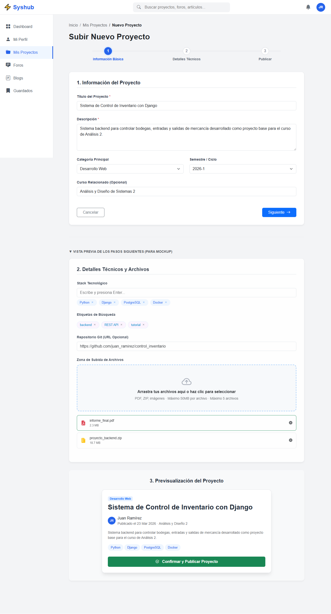
7.4. Perfil¶
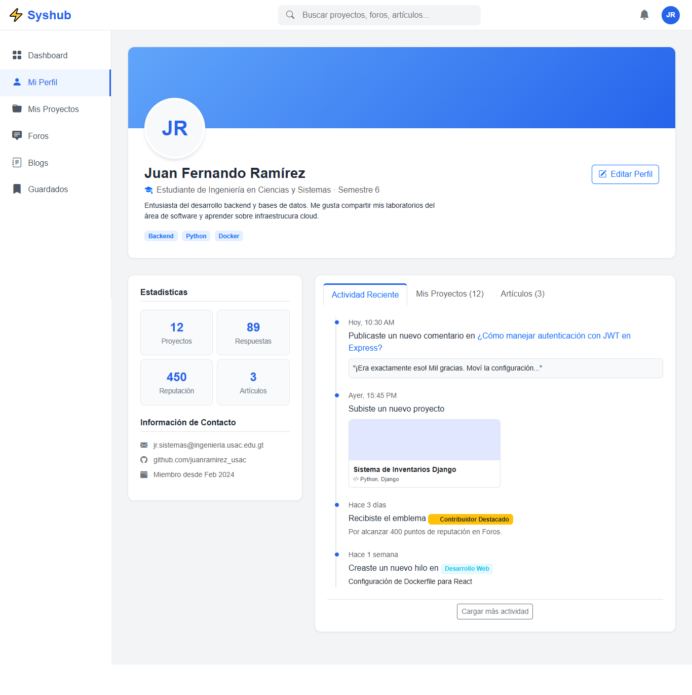
7.5. Blogs y artículos¶
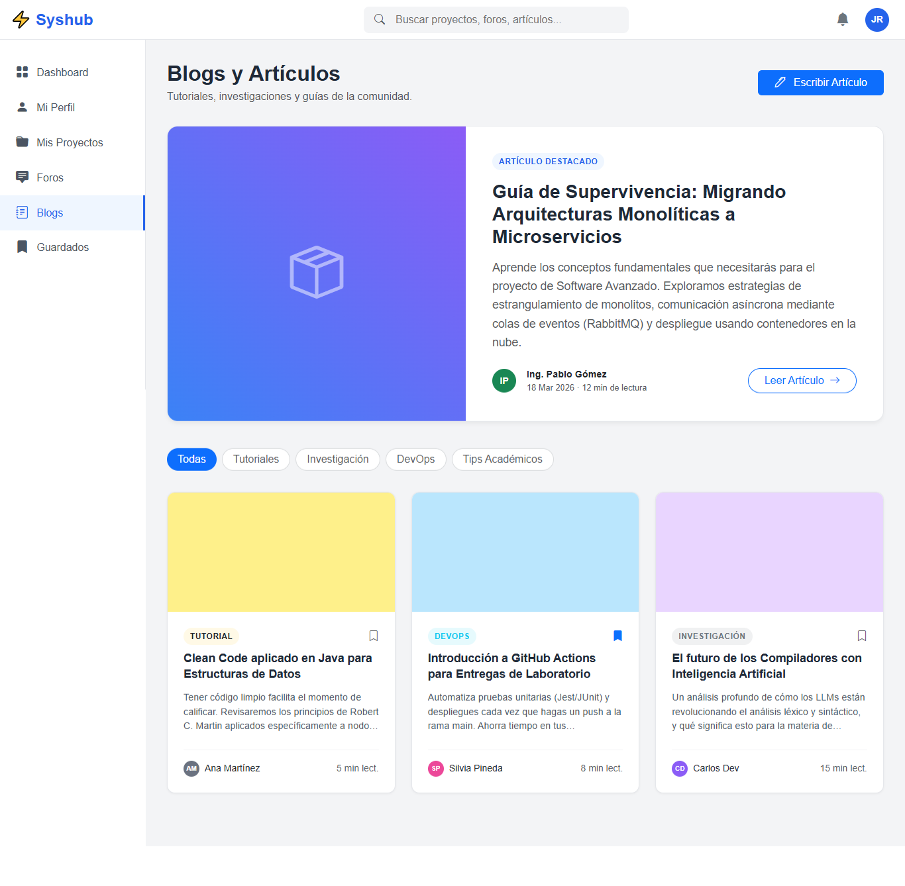
7.6. Guardados¶
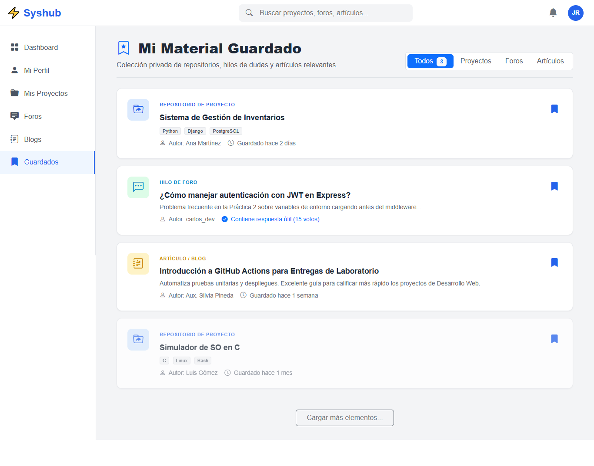